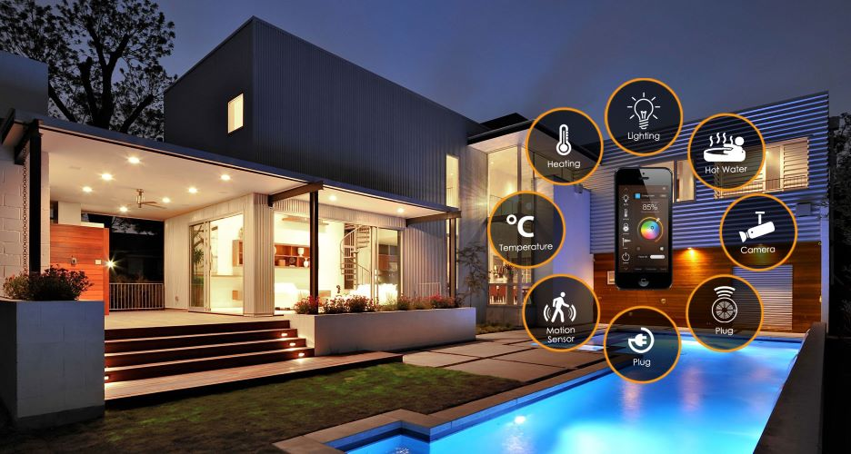
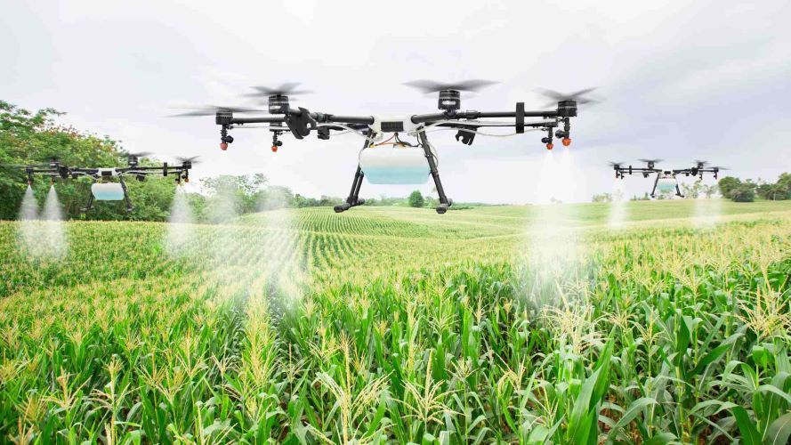
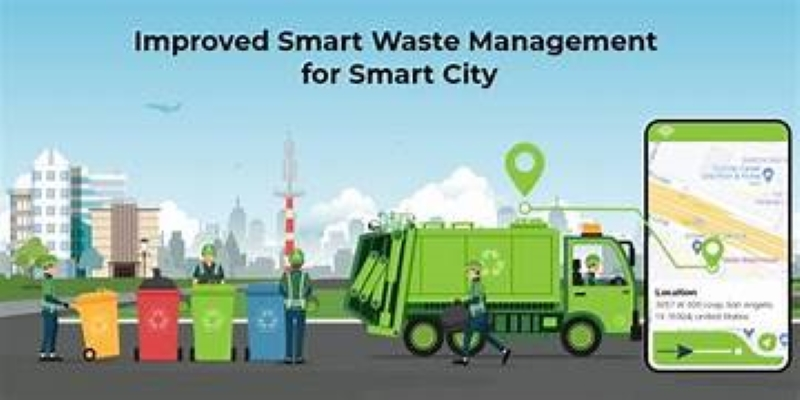

IOT SUMMARY
What is IOT- Internet of things ?
IoT stands for the "Internet of Things." It refers to the network of physical devices, vehicles,
appliances, and other objects embedded with sensors, software, and network connectivity,
allowing them to collect and exchange data. The goal of IoT is to enable these connected devices to
communicate and interact with each other over the internet, leading to smarter, more efficient,
and automated processes.
The Key characteristics of IoT include:
- Connectivity: IoT devices are connected to the internet or other devices, allowing them to send and receive data.
- Sensors and Actuators: IoT devices are equipped with sensors to collect data from their environment, and they often have actuators to perform actions based on the collected data.
- Data Processing: The data collected by IoT devices is processed, often in real-time, to extract meaningful information. This can be done locally on the device or in the cloud.
- Automation: IoT enables automation and control of devices without direct human intervention. Devices can respond to environmental changes or specific conditions.
- Interoperability: IoT systems aim for interoperability, allowing devices from different manufacturers to work together seamlessly.
- Communication Protocols: IoT devices use various communication protocols to transmit and receive data. Common protocols include MQTT (Message Queuing Telemetry Transport), CoAP (Constrained Application Protocol), HTTP/HTTPS, and others.
- Security Challenges: Security is a significant concern in IoT due to the vast number of connected devices. Ensuring the confidentiality, integrity, and authenticity of data is crucial. Security measures include encryption, secure authentication, and regular software updates.
- Edge Computing: Edge computing is often employed in IoT to process data closer to the source (on the device or at the edge of the network) rather than relying solely on centralized cloud servers. This reduces latency and bandwidth usage.
- Big Data and Analytics: The data generated by IoT devices can be massive. Big data analytics are used to process and analyze this data, extracting valuable insights. Machine learning and artificial intelligence may also be applied for predictive analysis.
- Industry 4.0: In the context of manufacturing, IoT plays a crucial role in Industry 4.0, where smart factories use connected devices and automation to enhance efficiency, reduce errors, and enable real-time monitoring of production processes.
- Smart Cities: IoT is a key component in the development of smart cities. Connected sensors and devices are used for efficient traffic management, waste management, energy usage optimization, and more, improving the overall quality of urban life.
- Healthcare: In healthcare, IoT devices include wearable fitness trackers, remote patient monitoring systems, and smart medical devices. These technologies enhance patient care, enable early disease detection, and facilitate telemedicine.
- Environmental Monitoring: IoT is employed for environmental monitoring and sustainability. Connected sensors can monitor air quality, water quality, and other environmental factors, providing valuable data for conservation efforts.
- Standardization Efforts: Various organizations are working on standardizing IoT technologies to ensure interoperability and security. Examples include the Industrial Internet Consortium (IIC), the Open Connectivity Foundation (OCF), and the IoT Consortium.
- Future Trends: The future of IoT includes advancements in 5G connectivity, the integration of blockchain for enhanced security, and the proliferation of IoT in more industries, contributing to the development of a fully interconnected world.
IoT applications are diverse and span various industries, including smart homes, healthcare, agriculture, transportation, industrial automation, and more. Examples of IoT
devices include smart thermostats, wearable fitness trackers, connected home security systems, and industrial sensors in smart factories.
The growth of IoT is driven by advancements in connectivity, miniaturization of hardware, decreasing costs of sensors, and the increasing demand for data-driven insights and automation in various domains.
IoT is a rapidly evolving field with continuous technological advancements and a growing impact on various aspects of our daily lives and industries. It's a multidisciplinary domain that involves hardware, software, communication technologies, and data analytics.
What is the difference between physical computing and IoT?
Physical computing focuses on creating interactive systems that directly interact with the physical environment, often on a smaller scale. IoT involves the networking of devices, enabling data exchange and automation on a larger scale, typically over the internet.
What is the correct statement for the physical computing concept?
Physical computing involves creating interactive systems that bridge the gap between the digital and physical worlds by using software and hardware, such as sensors and actuators, to sense and respond to the real world.
What can we do with a physical computing device?
With physical computing, you can create interactive systems that blend the digital and physical worlds. This involves using hardware like sensors and actuators to sense and respond to the real world. Applications range from interactive art and wearable technology
to DIY electronics projects, prototyping IoT devices, and enhancing human-computer interaction. It's a versatile approach fostering creativity and hands-on learning.
Some Photos I got from the Seminar:
Sample IOT projects:
- Smart Home Automation: Create a system that allows users to control and monitor home appliances, lights, thermostats, and security cameras remotely using a mobile app.

- Smart Agriculture: Implement an IoT solution for agriculture by deploying sensors in fields to monitor soil moisture, temperature, and crop health. The data helps optimize irrigation and crop management.

- Waste Management System: Implement a smart waste management system with sensors in trash bins to monitor fill levels. This data is used to optimize waste collection routes.
